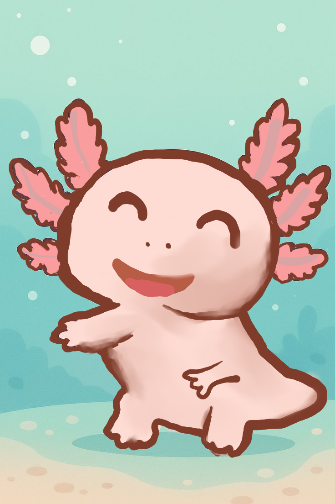

El ajolote es también conocido como “el pez caminante” a pesar de que es un anfibio. Este vertebrado posee una cabeza ancha y redondos ojos sin párpados, así como branquias, patas cortas y una cola con forma de aleta que le sirve para nadar. Incluso desarrolla pulmones.
El ajolote enfrenta graves problemas debido a:
Se promueve la protección de los canales de Xochimilco, programas de reproducción en cautiverio, educación ambiental y campañas de preservación de ecosistemas acuáticos.
